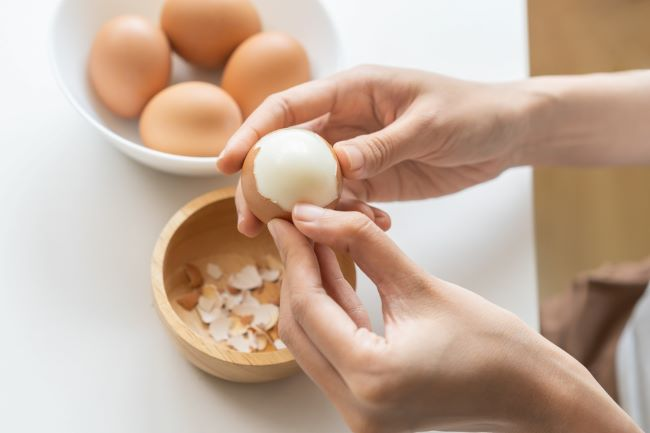

5 Manfaat Makan Telur Rebus yang Sayang untuk Dilewatkan
09 April 2025
Manfaat makan telur rebus sangat menyehatkan karena telur merupakan makanan tinggi protein. Mengolah telur menjadi telur rebus juga lebih sehat daripada mengolah dengan cara lain, misalnya digoreng, karena nutrisi telur lebih terjaga. Dampaknya, manfaat yang didapatkan pun jadi lebih banyak.
1.Menambah Massa Otot
Telur rebus merupakan salah satu sumber protein, yakni nutrisi yang bisa membentuk dan menjaga otot agar tetap kuat seiring bertambahnya usia. Dalam satu butir telur rebus, kamu bisa memperoleh sampai 6 gram protein, lho. Untuk kenaikan massa otot yang lebih optimal, imbangi juga dengan rutin berolahraga ya, terutama olahraga yang fokus untuk meningkatkan massa otot seperti latihan beban.
2.Menambah energi
Telur rebus merupakan salah satu makanan yang baik untuk menambah energi. Ini karena telur rebus kaya akan protein dan lemak. Dengan mengonsumsi telur rebus, kamu pun bisa jadi lebih bertenaga dan tidak mudah lelah saat menjalani aktivitas sehari-hari.
3. Mempercepat Pemulihan Luka
Banyak yang beranggapan bahwa orang yang sedang mengalami luka, termasuk luka jahitan atau baru operasi, tidak boleh makan makan telur. Katanya sih, telur bisa bikin luka jadi gatal dan susah sembuh. Ini tidak benar, ya.
4.Menjaga Kesehatan Jantung
Telur, khususnya bagian kuning telurnya, memang mengandung lemak jenuh yang bisa meningkatkan kadar kolesterol darah. Namun kalau direbus, telur umumnya mengandung lemak yang lebih rendah sehingga aman dikonsumsi. Selain itu, jika takut kolesterol naik, kamu pun bisa makan telur rebus bagian putihnya saja.
5.Memperkuat Imunitas Tubuh
Telur rebus merupakan sumber protein, vitamin D, selenium, zinc, dan kolin yang berperan penting dalam mendukung imunitas tubuh. Aneka nutrisi tersebut bisa mendukung sel-sel darah putih untuk bekerja lebih efektif dalam melawan kuman dan virus penyebab infeksi.
Berbagai manfaat makan telur rebus di atas juga bisa kamu dapatkan dengan mengolah telur menjadi berbagai variasi lho, misalnya telur rebus dengan taburan sedikit garam atau lada, telur balado, menambahkan telur rebus ke dalam salad, atau menjadikannya isian roti panggang.